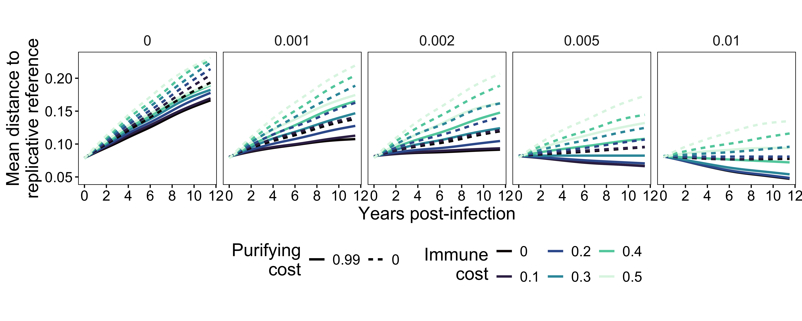
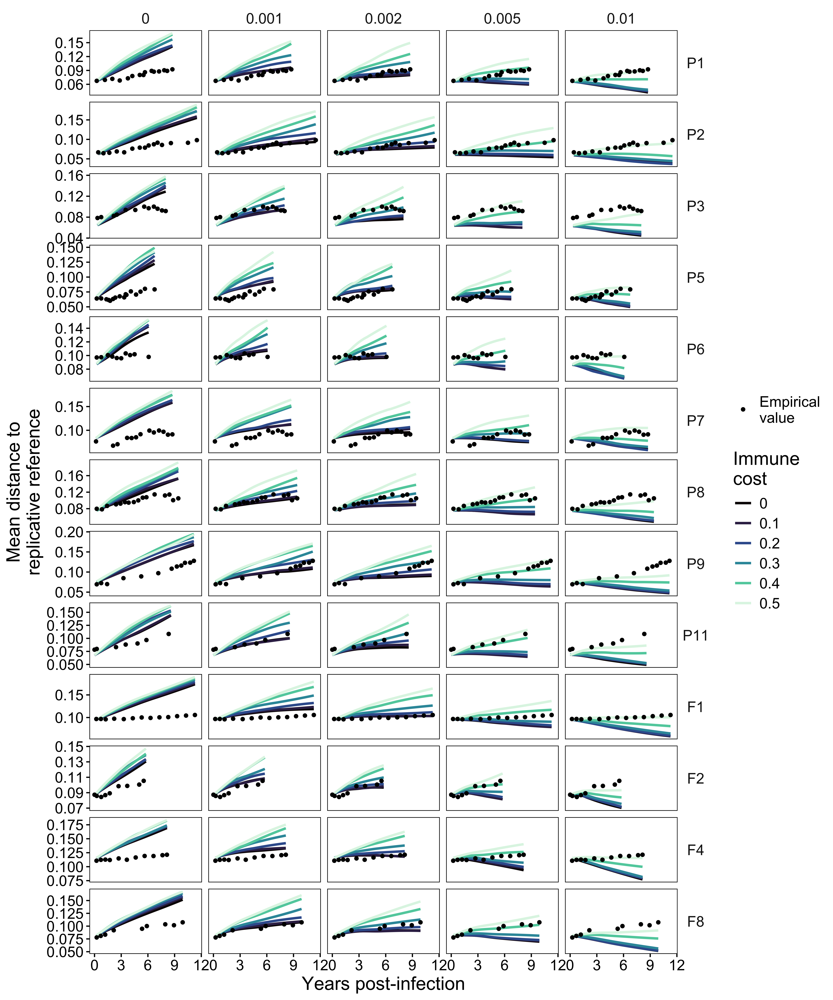
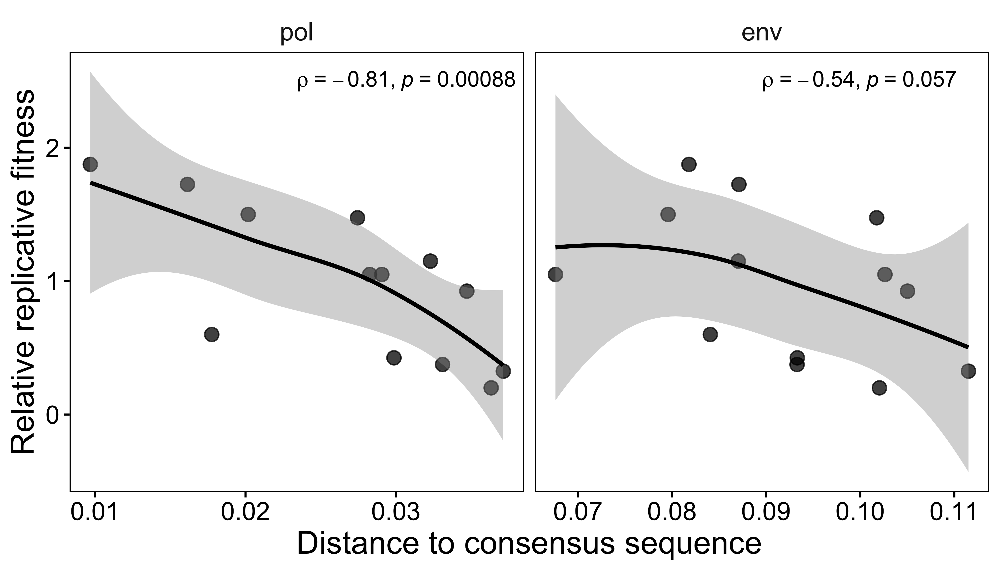
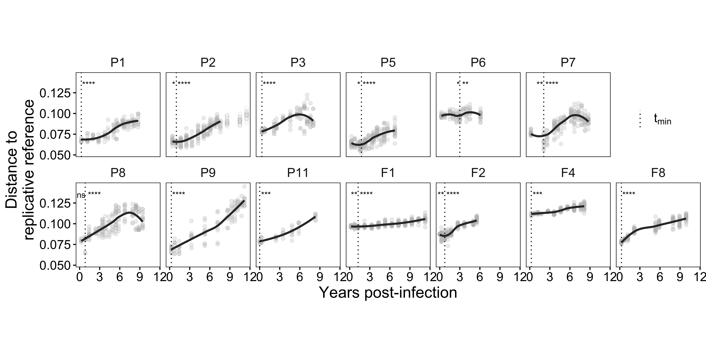
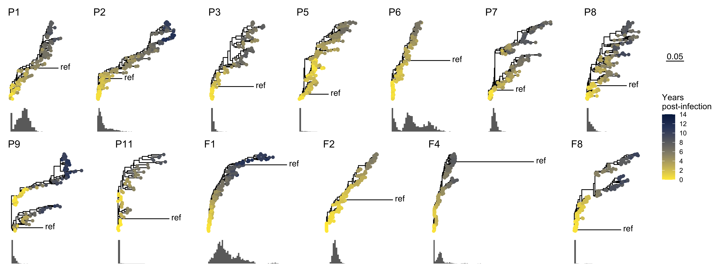
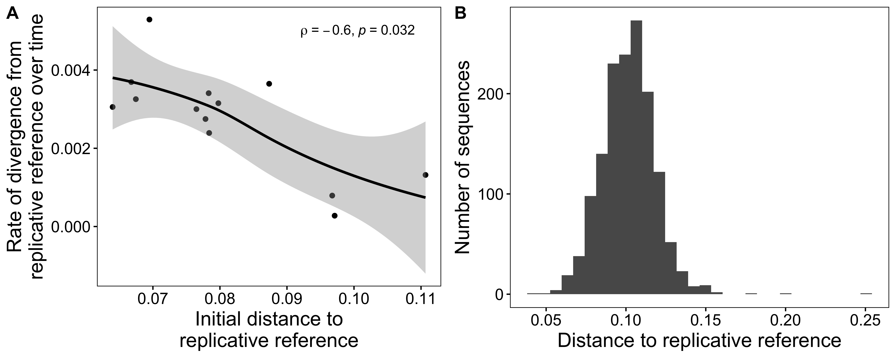

[1] 7800HIV fitness figures
Results
Simulations
Total number of simulations
Distance to reference


Fitness vs. distance to reference

Within-host data
Distance to reference over time
# A tibble: 2,334 × 6
# Groups: id [13]
id gen dist mean_dist min_gen censored
<fct> <dbl> <dbl> <dbl> <dbl> <lgl>
1 P3 2768 0.0974 0.0928 122 FALSE
2 P3 2768 0.0838 0.0928 122 FALSE
3 P3 2768 0.0838 0.0928 122 FALSE
4 P3 2768 0.0889 0.0928 122 FALSE
5 P3 2768 0.0906 0.0928 122 FALSE
6 P3 2768 0.0889 0.0928 122 FALSE
7 P3 2768 0.0906 0.0928 122 FALSE
8 P3 2768 0.0940 0.0928 122 FALSE
9 P3 2768 0.0957 0.0928 122 FALSE
10 P3 2768 0.112 0.0928 122 FALSE
# ℹ 2,324 more rows# A tibble: 1 × 3
mean_slope min_slope max_slope
<dbl> <dbl> <dbl>
1 0.00277 0.000277 0.00529# A tibble: 1 × 3
mean_dist min_dist max_dist
<dbl> <dbl> <dbl>
1 0.0919 0.0522 0.145# A tibble: 20 × 10
id .y. group1 group2 n1 n2 statistic p p.adj
* <fct> <chr> <chr> <chr> <int> <int> <dbl> <dbl> <dbl>
1 P1 dist min max_right 7 130 64.5 6.84e- 5 6.84e- 5
2 P2 dist min max_left 11 21 64.5 1.9 e- 2 1.9 e- 2
3 P2 dist min max_right 11 157 189 7.72e- 6 1.54e- 5
4 P3 dist min max_right 10 120 78.5 2.62e- 6 2.62e- 6
5 P5 dist min max_left 10 65 202. 2.7 e- 2 2.7 e- 2
6 P5 dist min max_right 10 161 110. 2.40e- 6 4.80e- 6
7 P6 dist min max_left 19 60 387 1.7 e- 2 1.7 e- 2
8 P6 dist min max_right 19 51 238 5.69e- 4 1 e- 3
9 P7 dist min max_left 12 19 39.5 1 e- 3 1 e- 3
10 P7 dist min max_right 12 176 87.5 5.52e- 8 1.10e- 7
11 P8 dist min max_left 10 7 46 8.71e- 1 8.71e- 1
12 P8 dist min max_right 10 184 17 8.92e- 8 1.78e- 7
13 P9 dist min max_right 10 111 83 4.52e- 6 4.52e- 6
14 P11 dist min max_right 6 46 22.5 4.82e- 4 4.82e- 4
15 F1 dist min max_left 21 45 300 9 e- 3 9 e- 3
16 F1 dist min max_right 21 209 430. 6.45e-10 1.29e- 9
17 F2 dist min max_left 24 48 380 9 e- 3 9 e- 3
18 F2 dist min max_right 24 138 247 1.55e-11 3.10e-11
19 F4 dist min max_right 5 192 50 3.21e- 4 3.21e- 4
20 F8 dist min max_right 20 170 5.5 1.64e-13 1.64e-13
# ℹ 1 more variable: p.adj.signif <chr>
Phylogenies with reference
# A tibble: 13 × 6
id n mean_fj sd_fj min_fj max_fj
<fct> <int> <dbl> <dbl> <dbl> <dbl>
1 P1 1000 0.0318 0.0166 0 0.0819
2 P2 1000 0.0240 0.0239 0 0.135
3 P3 1000 0.00465 0.00438 0 0.0416
4 P5 1000 0.00163 0.00601 0 0.0520
5 P6 1000 0.0692 0.0447 0 0.195
6 P7 1000 0.0204 0.00757 0.00181 0.0596
7 P8 1000 0.00753 0.00804 0 0.0532
8 P9 1000 0.00522 0.00671 0 0.0506
9 P11 1000 0.00117 0.00644 0 0.0606
10 F1 1000 0.0688 0.0414 0.00273 0.258
11 F2 1000 0.0285 0.00747 0.0108 0.0584
12 F4 1000 0.0237 0.0245 0 0.200
13 F8 1000 0.000691 0.00513 0 0.0528# A tibble: 1 × 2
mean_mean mean_sd
<dbl> <dbl>
1 0.0221 0.0156
95%
0.1265519 [1] 0.145